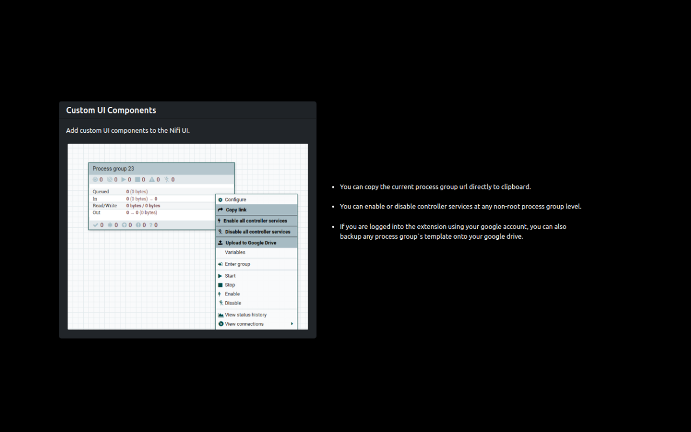

Nifi Utils
Manage your production Nifi instances like a pro.
Successfully Installed...!
This extension only works on Nifi instances that are deployed / productionized.
When a logged-in Nifi instance is opened in the currently active tab, the extension injects a content script in that tab, which retrieves the JWT (JSON Web Token) token and hostname of the Nifi instance from the currently active tab to the extension. Then using that token and the instance`s hostname, the extension can retrieve all the process groups present on the Nifi canvas. And they are also cached to view later. Then you can search & sort the fetched process groups based on various filters. You can also bookmark any process group by adding it to the queue. And export the queue as a CSV file. Apart from fetching only what is available on the canvas, you can also search for process groups in the whole Nifi instance. And these search results are also cached to be viewed later. Once any process group is fetched from canvas/searched for, it will available to be directly searched from chrome`s search bar. Anyone working on Nifi 1.13.2 or less can leverage various custom UI components which are directly injected into the Nifi UI. They can help you in enabling/disabling all the controller services at a certain process group level, copy the JWT token using a single click, and back up any of the process groups to your google drive. You can enable any of these custom UI components using the options menu.
Anger is a statement, well like a statement after return; statement. It
is of no use. But on the other hand, constructive criticism is definitely of some use. So, if
you find any bugs or you don't like this extension, Be patient & provide feedback on the same.
Will try to improve it to the best of my ability.
- When the button is clicked, the extension retrieves all the process groups present on the screen in Nifi into a HTML table inside the extension.
- And the records can be filtered by searching for a process group name. Also the process groups can be sorted by number of running, stopped, invalid, disabled processor counts by clicking on the corresponding column name.
- And when the button is clicked, the cached process groups are cleared.
Fetching Process Groups
All process groups visible on the current Nifi screen are fetched inside the extension.

Adding To The queue
The process groups can be bookmarked, by adding them to the queue.

- When the button is clicked, the corresponding process group is added to the queue.
- Alternatively, all process groups can be added to the queue by clicking on the button.
- When the button is clicked, the corresponding process group is removed from the queue.
- The queue will be copied onto the clipboard in the form of CSV data, by clicking on the button.
- The items cached in the queue will be cleared, by clicking on the button.
Managing the queue
Items in the queue can be cleared or copied onto the clipboard as CSV data.

Global Search For Process Groups
Unlike fetch process groups, which just fetches the process groups present on the Nifi canvas, This feature searches for the given keyword in whole of the current Nifi instance.

- When the button is clicked, with some keyword provided in the search box, the search results are fetched and displayed inside the extension.
- The search results will be copied onto the clipboard in the form of CSV data, by clicking on the button.
- The items cached in the search results will be cleared, by clicking on the button.
-
Typing the keyword
nu
and then pressingspacebar
key in the chrome`s search bar will enable omni box search. Where all the process groups can be searched and opened in a jiffy.
Searching Directly From Omni Box
Once any process group is fetched/searched from any instance, it will be available to be searched from the chrome search itself indefinitely until the extension is uninstalled.

Custom UI Components
Add custom UI components to the Nifi UI.
- You can copy the current process group level`s url directly to clipboard.
- You can enable or disable controller services at a non-root level.
- If you are logged into the extension using your google account, you can also backup any process group`s template onto your google drive.